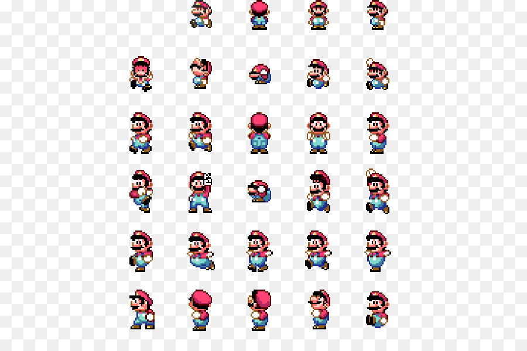

Projets 2023
Cette page permet d'explorer les projets NSI des élèves !
Le projet est basé sur cet excellent tuto : tuto de la fondation Mozilla
Les projets :
Quelques outils
Faire bouger un personnage dans un canvas avec le clavier
Découper une image
La bibliothèque Python pillow contient une fonction crop qui permet de découper une partie d'une image, typiquement de découper une partie d'une planche de sprites comme celle-ci par exemple :

Voici un notebook contenant un exemple de découpage ; penser à uploader l'image dans basthon pour pouvoir l'utiliser.
Un lien direct